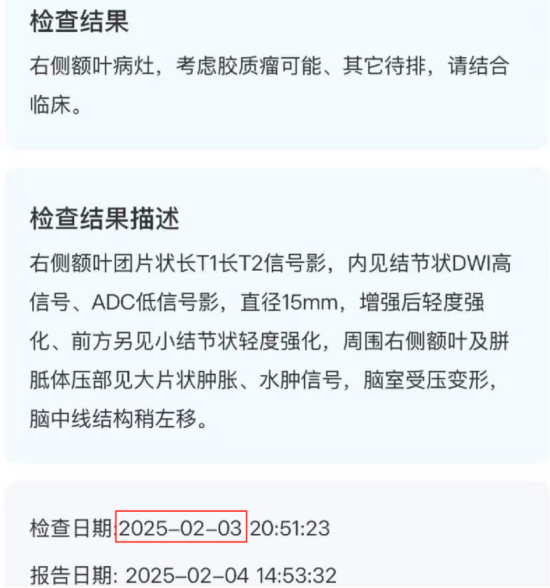
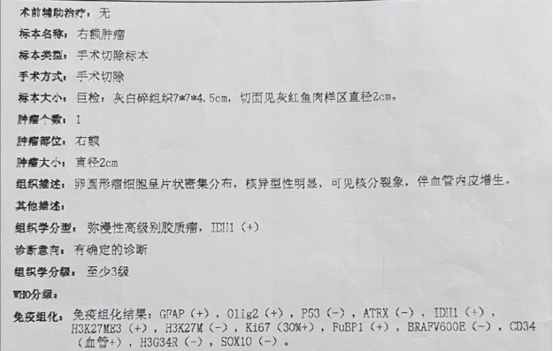
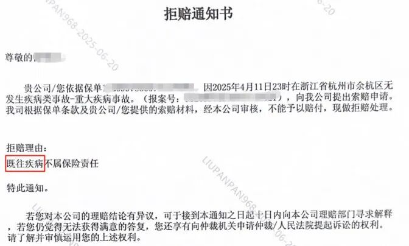
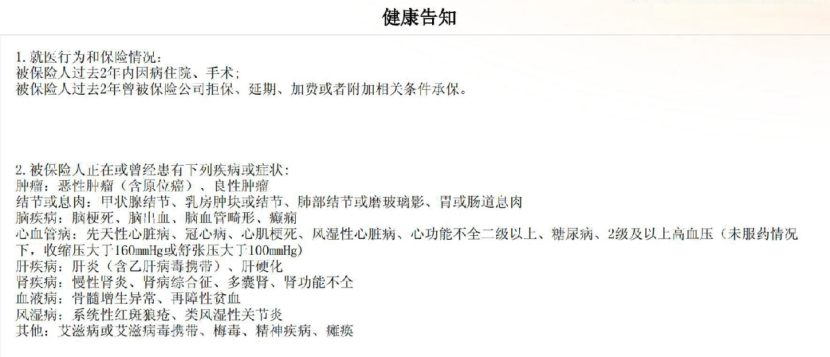
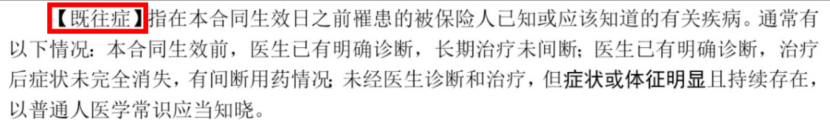
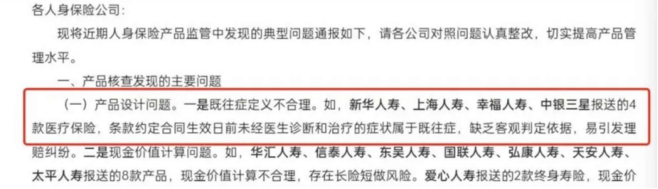

条款巨大漏洞，疑似肿瘤带病投保，却不得不赔
在各种类型的保险理赔纠纷中，因既往症问题拒赔的占了绝大多数，今天我们来看一起既往症拒赔案件，让保司险陷入了要不要按条款来执行的囧境：
【事情的由来】
客户在2025年2月做磁共振检查，发现脑袋里长了一个肿块，怀疑是肿瘤，但并未确诊。忧心忡忡的客户赶紧到支付宝买了两份保险，其中一份是简易健告百万医疗险。

2025年4月，客户住院做手术切除肿块，经病理检查确诊为大脑胶质瘤（属于恶性肿瘤），出院后申请理赔，保司以既往症为由拒绝赔付。


【带病投保?】
有的朋友可能会说，投保前就发现脑袋有肿块，这不就是妥妥的“带病投保”嘛，被拒赔似乎也是合理的。各位看官，先别急，咱们先看看投保时的健康问卷是怎样的。

这款产品跟我们平时看到的产品不一样，是一款简易健告产品，其健康问卷是非常宽松的。其中第二条询问了是否患有“恶性肿瘤、良性肿瘤”，但是客户投保前只是做了个检查，虽然怀疑为肿瘤，但是并没有确诊。在当时来看，到底是不是肿瘤还不一定呢。不可否认，彼时客户是有点“病急乱投保”，但客户是没有过错的，完全没有违反如实告知义务。
那么合同的条款对既往症又是怎么约定的呢，在合同条款中，既往症定义有两处：
【定义一】

【定义二】

我们知道，合同条款里，对专业词汇的定义只能是一个，显然，这里两处定义应该是条款设计和审核条款人员的疏忽和不严谨导致这样的错误发生。既然有两个释义，那么既往症到底从哪个释义呢？这两个定义中，定义一排列在定义二之前，处于条款的显眼位置，而且以加粗加黑方式以引起客户注意和重视；而定义二隐藏在文末，不仅难以察觉，而且其文字格式跟其他普通文字无明显区别，根本无法引起客户注意和重视。我们可否认为，（定义一）展示靠前、位置显眼且加粗加黑等处理方式，意味着优先的地位？我们知道，当同一条款存有两种不同解释的时候，保险法都规定应采用有利于客户的解释，更何况本案中的“定义一”还是一个白纸黑字、毫无歧义的定义，并做了加黑加粗处理。
那么客户的情况是否符合定义一约定的既往症呢？
本产品等待期只有30天，客户等待期内无任何检查，等待期后才手术并确诊为脑瘤，脑瘤也不是先天性疾病——这显然不属于定义一所称的既往症。因此，被保人所患疾病明显不属于本合同条款约定的“既往症及其并发症”，保司以“既往疾病不属于保险责任”拒赔的依据何在？难道以定义二来推翻定义一吗？
【谁来背锅?】
经沟通后得知，保司是根据定义二将客户疾病认定为既往症予以拒赔。这就有点厚颜无耻了。话说回来，即便是既往症的定义二，保险条款也是有问题的。鉴于既往症一直以来都是健康保险理赔的主要争议点，前银保监会在2022年起就对既往症的定义提出了整改意见，在《人身保险“负面清单”（2022年版）》中指出，将“未经医生诊断和治疗的症状”判定为既往症的做法是不合理的，并要求各保险公司依法合规开发和销售保险产品，更好地保护消费者合法权益。所以就算按照定义二来看，客户也是应当获得理赔的。这份2024年销售的保险，既往症的定义二显然与2022年监管部门的指导文件不符，属于明知故犯、违规拒赔。

资料来源：前银保监会，人身险部函〔2022〕19号
我们将以上疑问写了封申诉信发给理赔老师，迟迟没有回复，致电咨询才知道，理赔部门已经将此问题转给产品部和法务部，他们已经几次催促两部门就申诉信里的条款问题作出答复，至今没有音讯。
完全可以理解两部门的难处：这么明显的带病投保，如果按条款理赔了，领导那边肯定说不过去，而且开了这个先河，这个产品以后遇到类似情况都得赔，这个大锅谁背？现在是法制社会，如果不按合同条款理赔，传出去岂不是成了个行业笑话。
【结束】
可能有的朋友就会问了，这么明显的带病投保，怎么能让客户钻了空子呢？
这就是个很有意思的话题，现在很多保司都涉足简易健告，甚至免健告的百万医疗险业务，既然把健康问卷设计得如此宽松，就应该预料会有很多体况不佳的客户来投保。这家保司可能是第一次设计这种产品，比较安全的做法是参考市面上成熟产品的条款做修改，而不是全新设计产品条款。可能是为了证明自己设计产品的能力，从头到尾都是全新写的条款，没有经过市场的拷打。没想到今天就碰到钻条款漏洞的客户，才出现这种情况，相信这也是当初设计产品的人也没想到的。
我与保司协商，建议他们这次就做通融赔付，马上停售这个产品，更新升级，补上这个条款漏洞再重新上架。保司从善如流，本次理赔纠纷也有个圆满的结局。
——End——
我是任巍巍，
中山大学工商管理硕士，
大家可以信任的十年资深保险顾问。
帮大家解决买怎么买保险问题，
帮大家解决保险拒赔问题。
有求助或者交流可以扫码加任老师的微信

本文由 ShawnCH（何智翔）轉發，透過微信聊天記錄自動提取並整理。 原文連結：https://mp.weixin.qq.com/s?__biz=MzUxNzM5MzQwNg==&mid=2247485027&idx=1&sn=7453c56a1b14a30d9e48a86aa3811ea8&chksm=f8c511c88ab1cd1969109ca601e86e87fe3b516aca9468fc025ef6ea63103b797f022609aeb4&mpshare=1&scene=1&srcid=0115ntVC1CjWtkEYRYM7CdWf&sharer_shareinfo=68bdd65d5d0f0554c0debf22a7e13969&sharer_shareinfo_first=68bdd65d5d0f0554c0debf22a7e13969#rd